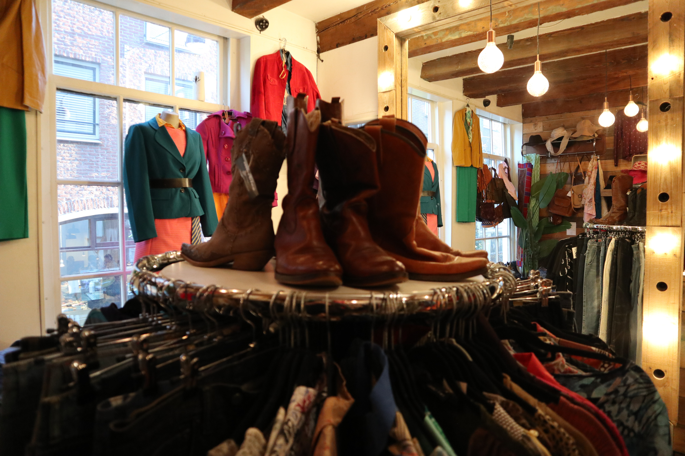

About
Tegenwoordig zijn is thriften en tweedehands kopen weer helemaal in. Hierdoor zijn er ook veel meer vintage en tweedehands winkels. Maar wat maakt Marbles Vintage zo speciaal? Het zit in de naam maar Marbles Vintage heeft alleen kwaliteit vintage kleding in de winkels. Dit gaat van broeken tot jassen en is dus de perfecte plek om vintage kleding te vinden als dat je style is. Vindt je dus wat je ziet interessant en denk je hier nieuwe kleding te kunnen vinden? Kom dan snel naar één van de locaties en vindt je nieuwe kleding!